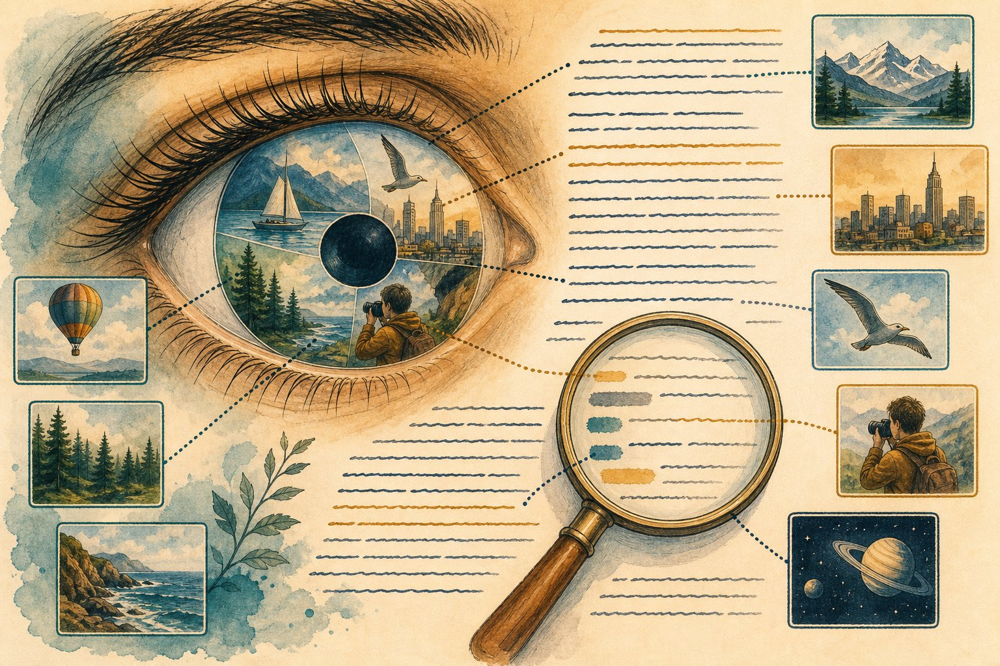

Vision-language models
Models that see and read: CLIP matched images to captions, then LLaVA-style models plugged vision into LLMs. Learn how pixels become tokens, what grounding and OCR unlock, and where VLMs still hallucinate.

Figure 51.1 — Pixels in, tokens through, grounded answers out. The projector bridging vision and language is the whole trick.
1. CLIP: the foundation
- Idea: train an image encoder + text encoder contrastively on 400M image–caption pairs: matching pairs attract, random pairs repel. Result: one shared embedding space.
- Superpower: zero-shot classification — “a photo of a {label}” text embeddings vs the image, no training per task. Powers search, moderation, and retrieval (Ch 48 multimodal RAG).
- Limit: bag-of-words-ish; struggles with counting, spatial relations (“left of”), and fine detail. Know this before trusting it.
2. LLaVA-style: vision meets LLM
3. What unlocks: grounding, OCR, docs
- Referring + grounding: “the red valve, second from left” → bounding box / mask (Grounding-DINO, SAM hybrids). Inspection, robotics, UI agents.
- OCR & documents: VLMs read invoices, tables, handwriting — often beating classic OCR pipelines because layout + language disambiguate.
- Video: sample frames → same pipeline; add temporal pooling. Cost scales with frames — retrieve keyframes first.
VLM failure modes
Hallucinated objects that aren’t there (always verify against detections for safety uses) · tiny-text blindness (crop + zoom pipeline) · counting errors · prompt-injected images (pixels as jailbreaks — treat images as untrusted input).
Short notes
CLIP = contrastive image–text space, zero-shot everything coarse. LLaVA-style = ViT → projector → LLM, 2-stage trained. Wins: grounding/boxes, OCR/docs, UI understanding. Verify objects for safety uses; crop-zoom for tiny text; images are untrusted input too.
Point notes
- Contrastive pairs build shared space.
- Projector turns patches to tokens.
- Align, then instruction-tune.
- Grounding = words → boxes.
- Verify; zoom; distrust pixels.
MCQs
5 questions1. CLIP learns by:
2. In LLaVA-style models the projector’s job is to:
3. Visual grounding means:
4. VLM misses tiny label text. Best fix:
5. Images in prompts must be treated as untrusted because:
Practice questions
P1. Design invoice extraction: photo → structured JSON (vendor, lines, totals). Pipeline + checks.
Detect document → dewarp → VLM reads to JSON with schema (few-shot) → verify: line sums = total, GST math, date sanity; low-confidence fields route to human review. Eval: field-level F1 on 200 held-out invoices incl. crumpled/handwritten. Never trust totals without arithmetic checks.
P2. Factory visual inspection with a VLM: where does it beat a classifier, and what must you verify?
Beats: novel defect descriptions (“scratch near bolt”) without retraining, explanations for operators. Verify: grounding boxes against calibrated detectors, false-negative rate on a seeded defect set (missing defects costs more than false alarms), latency per part, and drift as lighting/parts change.
P3. Your shopping search matches “red dress” to red cars. Debug the CLIP setup.
CLIP is coarse + attribute-blind: colour dominates, object binds weakly. Fixes: fine-tune contrastively on catalogue pairs (hard negatives: same colour, wrong object), add attribute classifiers/detectors as filters, hybrid keyword + vector search, and eval on attribute-swap probes (“red dress” vs “red car”).